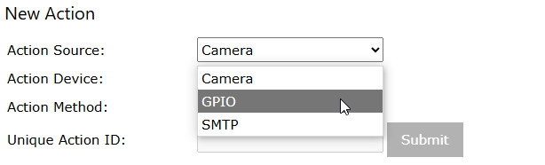
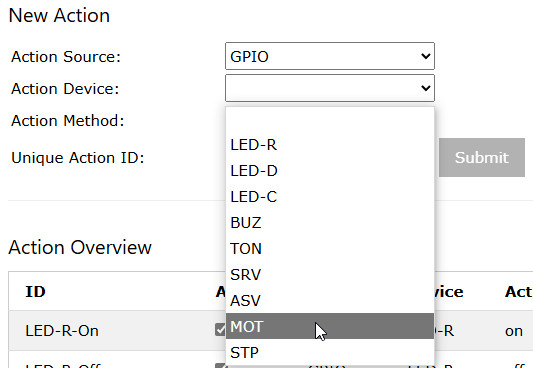
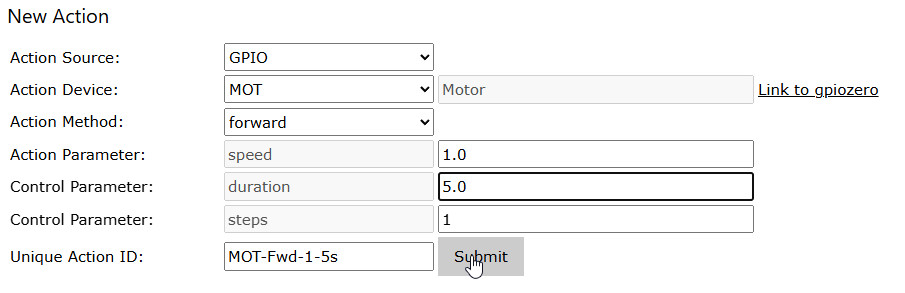

Actions

This screen is used to specify actions which can be started by raspiCamSrv, either as a reaction on a Trigger or manually through an Action Button.

IMPORTANT: To preserve any configurations over server restart, you need to store the configuration and activate Start Server with stored Configuration.
Creating an Action
- In field Action Source, select the source system for which the action is defined:
(Camera will be available as option only if a camera is available)
 - This will open a list of devices defined for the chosen source system:

For the GPIO system, these are the Output devices configured on Settings/Devices
NOTE: For SMTP, a device will only be shown if a mail account has been specified and verified in dialog Notification.
If this is the case, the configured SMTP Server will be shown as device. - After a device has been selected, the system will show the device type with a link to related gpiozero documentation as well as the action methods which can be executed for this device (this information is taken from the fixed configuration for the device type):

- When the method has been chosen, the sytem will display any parameters which may be required for this method:

Now you need to specify values for these parameters, unless you leave the defaults, and enter a unique name for the action.
In this step, the Submit button will be activated. - Pressing the Submit button will create the action and show it in the Action Overview.
Parameters
The parameters, for which values can be specified, are parameters of the method signature for the device class.
Information about their type and value range, as well as about their function can be obtained from the gpiozero class documentation accessible through the link.
raspCamSrv will check the data type by analyzing the datatype of the configured template. However, the allowed value range is currently not checked. You need to consult the gpiozero documentation.
Sometimes, the 'Action Method' is in fact a property and not a callable method. In this case, raspiCamSrv will just assign the value to the property and ignore the parameter name.
Control
Control parameters are not part of the class interfaces but they can affect how raspiCamSrv processes an action method:
- duration
With duration, you can specify the length of the time interval, during which the device will stay in the state achieved through the method, for example the 'on' state of an LED.
After this time, the system will check, whether the device object has a method off() (which is the case for LEDs and Buzzer) or a method stop() (which is the case for Motor and TonalBuzzer).
If either of these methods is found, it is applied.
In effect, the device will be in an inactive state afterwards. - steps
This is the number of steps in which the device shall reach the intended state within the given duration.
The intention here is that one might want a smooth rather than an abrupt movement, for example for a Servo.
NOTEThis feature is currently not yet supported. - burst_count
This is a a parameter for method "take_photo". You can specify the number of photos which shall be taken as part of a photo burst in a series with a given interval. - burst_intvl
This is the interval you can specify for a photo burst. - attach_photo, attach_video
for an SMTP action, you can specify whether or not photos and/or videos shall be attached to the mail which have been created as part of the actions of the triggered event.
Restrictions
At a given time, only one action can be executed on a specific device type.
Timing of Action Execution
Whereas action execution is synchronous, when invoked through an Action Button (the user needs to wait until the action is completed), this is different for the case when an action is triggered by a Trigger.
In the latter case, action execution is done in an own thread which allows the action to be completed independently from the event handling thread which can treat other events in the meantime.
This means that actions are always completed and not interrupted.
This applies to actions with a configured duration, such as an LED which shall be 'on' for a certain time or a video with a given duration.
However, it applies also to actions with an inherent time consumtion. For example the movement of a StepperMotor can consist of hundreds of steps with a waiting time of 1 to 4 ms after each step. This requires in total several seconds to complete.
If for such an action a new action is requested before the previous action is completed, it will wait until the device is no longer busy.
When stopping the event handling system, raspiCamSrv will wait for active actions to complete.
Activation of Actions
If the event-handling thread is currently active: - The Active check boxes are locked.
If the event-handling thread is not active: - The Active check boxes are active
You can activate/deactivate Actions by changing the Active check box and submitting the change.
Deletion of Actions
You can select one or multiple actions for deletion in the Delete column and submit the selection.
The Delete column will only be accessible for change if the event-handling thread is currently not active.
You cannot delete an action if it is used in an Action Button.
When an action is deleted, also its reference in the Trigger-Actions will be removed.
Changing Actions
Changing of actions is currently not possible.
However, you can easily create a new similar one with different parameters and deactivate or delete the old one.